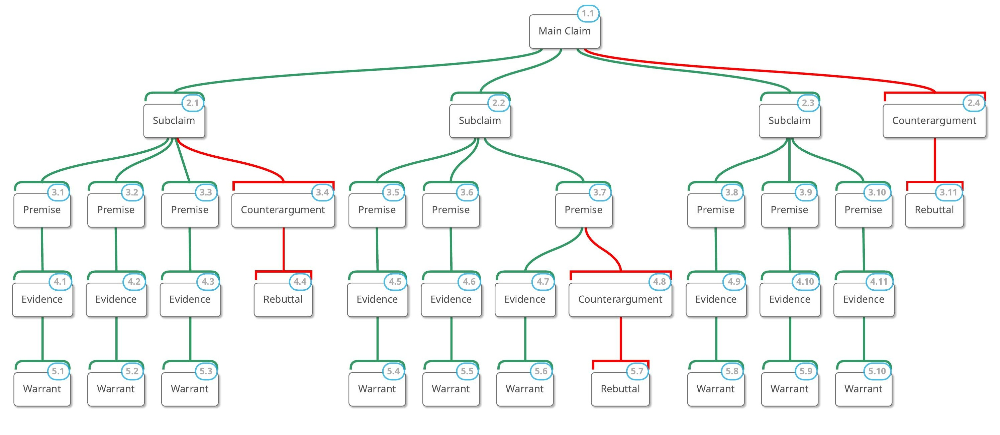

A premise is a statement that provides a specific reason to believe a claim is true. In an argument, premises explain why a subclaim is reasonable and supported. They identify the facts, research findings, patterns, or other points of reasoning that help establish the subclaim.
Think of premises as the building blocks of your argument. Your subclaims identify the major reasons for your position, while your premises break those reasons into smaller, more specific statements that can be investigated and supported through research.

A subclaim is often broad enough to require several pieces of supporting reasoning. A premise identifies one specific point that helps establish the subclaim. Each premise should contribute something meaningful to the argument.
For example, consider the following argument:
To support this subclaim, you need to identify specific reasons why a four-day workweek might improve employee well-being.
Notice that each premise identifies a different reason why the subclaim may be true. Together, these premises provide multiple lines of reasoning that can be investigated through research.
A strong premise is specific, relevant to its subclaim, and capable of being supported through evidence. It should introduce a meaningful point rather than simply repeat the subclaim using different words.
A premise should identify a particular reason or point of reasoning. Avoid statements that are so broad that they do not explain anything about the subclaim.
Every premise should help establish the specific subclaim under which it is organized. If a premise supports a different reason for your main claim, it may belong under another subclaim.
You should be able to find credible research, statistics, expert statements, industry reports, or other relevant information that supports the premise. A premise is not simply an opinion. It is a statement that you can investigate and support.
Your premises should not all make essentially the same point. Each should contribute a different reason or perspective that strengthens the subclaim.
Research is not just something you collect after writing your argument. Research can also help you identify and develop the premises that support your subclaims. As you review your articles, look for specific findings, patterns, facts, and expert explanations that help explain why your subclaim may be true.
Identify the specific subclaim you are trying to support. Keep this statement in mind as you review your research.
Look for the main findings or key points in your articles. Pay particular attention to statistics, research results, comparisons, and explanations from experts that relate directly to your subclaim.
Do not simply copy a statistic or quotation and automatically treat it as a premise. Instead, think about what the information demonstrates and why it matters to your argument.
Ask yourself:
Use your interpretation of the research to develop a clear statement that identifies the specific point you want to establish. The premise should communicate the meaning of the evidence rather than simply repeat it.
Review the premise alongside your subclaim. Make sure the premise directly contributes to establishing the subclaim and that you can identify credible evidence to support it.
Evidence and premises are connected, but they serve different purposes in an argument. Evidence provides the information you use to support your reasoning. A premise is the statement you develop to communicate the specific point that helps establish your subclaim.
| Component | Purpose |
|---|---|
| Subclaim | Identifies a major reason supporting your main claim. |
| Premise | Identifies a specific point that helps establish the subclaim. |
| Evidence | Provides research findings, facts, statistics, or expert information that supports the premise. |
Each subclaim should be supported by multiple premises. Having several distinct premises allows you to build a more complete argument rather than relying on one reason or one piece of evidence.
For this project, you will develop three premises for each subclaim. Each premise should identify a distinct point that helps establish the subclaim. You will then use credible research to support each premise.
Developing premises requires you to think critically about your research. You are moving beyond identifying what an article says and beginning to explain what the information means for your argument.
Before finalizing a premise, ask yourself:
A strong argument is built by connecting specific premises to credible evidence. Your premises explain the reasoning behind your subclaims, while your evidence demonstrates why that reasoning should be accepted.